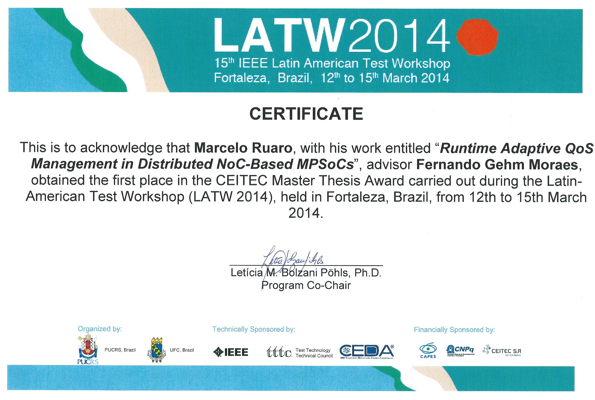

| 29 |
Deploying Artificial Intelligence in Resource-constrained Devices For Human Activity Recognition
Rafael Schild Reusch
PPGCC-PUCRS, 17/agosto/2023
|
| 28 |
Proposal of Many-core Control Through the Management Application
Angelo Elias Dalzotto
PPGCC-PUCRS, 24/Fevereiro/2022
|
| 27 |
Interfaces de Rede Seguras para Conexão de Periféricos em MPSoCs
Tadeu de Sousa Marchese
PPGCC-PUCRS, 13/Janeiro/2022
|
| 26 |
Vulnerabilidades de Segurança e Contramedidas em Plataformas MPSoC
Anderson Camargo Sant’Ana
PPGCC-PUCRS, 16/Agosto/2019
|
| 25 |
Improving QoS by Employing Multiple Physical NoCs on MPSoCs
Douglas Roberto Guarani da Silva
PPGCC-PUCRS, 03/Março/2016
|
| 24 |
Técnicas de Tolerância a Falhas Aplicadas a Redes Intra-Chip
Vinicius Morais Fochi
PPGCC-PUCRS, 13/Março/2015
|
| 23 |
Runtime Adaptive QoS Management In NoC-Based MPSoCs
Marcelo Ruaro
PPGCC-PUCRS, 26/fevereiro/2014
|

|
| 22 |
Controle Adaptativo para Atendimento a Requisitos de Aplicações em MPSoCs
Guilherme Afonso Madalozzo
PPGCC-PUCRS, 11/março/2013
|
| 21 |
Gerência Distribuída de Recursos em MPSoCs – Mapeamento e Migração de Tarefas
Guilherme Machado de Castilhos
PPGCC-PUCRS, 25/janeiro/2013
|
| 20 |
Reduction of Energy Consumption in MPSoCs Through a Dynamic Frequency Scaling Technique
Thiago Raupp
PPGCC-PUCRS, 27/março/2012
|
| 19 |
Distributed Memory Organization with Support for Data Migration for NoC-based MPSoCs
Tales Marchesan Chaves
PPGCC-PUCRS, 24/janeiro/2012
|
| 18 |
Mapeamento Dinâmico de Aplicações para MPSoCs Homogêneos
Marcelo Grandi Mandelli
PPGCC-PUCRS, 22/março/2011
|
| 17 |
Integração de Novos Processadores em Arquiteturas MPSOC: um Estudo de Caso
Eduardo Weber Wächter
PPGCC-PUCRS, 23/março/2011
|
| 16 |
Monitoramento de Desempenho em plataformas MPSoC baseadas em NoC
Samuel dos Santos Marczak
PPGCC-PUCRS, 11/março/2010
|
| 15 |
Implementação e Avaliação de Métodos para Confiabilidade de Redes Intra-Chip
Alzemiro Henrique Lucas da Silva
PPGCC-PUCRS, 27/jan/2010
|
| 14 |
Implementação e Avaliação de Desempenho de um MPSoC Homogêneo Interconectado por NoC
Odair Moreira
PPGCC-PUCRS, 23/out/2010 (MINTER)
|
| 13 |
Estimativa e Redução da Dissipação de Potência em Redes Intra-Chip com Chaveamento por Pacotes
Guilherme Montez Guindani
PPGCC-PUCRS, 12/jan/2009
|
| 12 |
Estratégias para Otimização de Desempenho em Redes Intra-Chip - Implementação e Avaliação sobre a Rede Hermes
Everton Alceu Carara
PPGCC-PUCRS, 10/jan/2008
|
| 11 |
Alocação de Tarefas e Comunicação entre Tarefas em MPSoCS
Cristiane Raquel Woszezenki
PPGCC-PUCRS, 28/fev/2007
|
| 10 |
Qualidade de Serviço em Redes Intra-Chip - implementação e avaliação sobre a rede HERMES
Aline Vieira de Mello
PPGCC-PUCRS, 16/jan/2007
|
| 9 |
Sistemas Dinamicamente Reconfiguráveis com Comunicação via Redes Intra-Chip
Leandro Heleno Möller
PPGCC-PUCRS, 2006
|
| 8 |
Uma Proposta para Geração de Tráfego e Avaliação de Desempenho para NOCs
Leonel Pablo Tedesco
PPGCC-PUCRS, 2006
|
| 7 |
Proposta de Arquitetura para NIDS Acelerado por Hardware
Luís Carlos Mieres Caruso
PPGCC-PUCRS, 2005
|
| 6 |
Redes Intra-chip Parametrizáveis com Interface Padrão para Síntese em Hardware
Luciano Copello Ost
PPGCC-PUCRS, 2004
|
| 5 |
Integração de Técnicas de Teste Baseado em Software no Fluxo de Projeto de SOCs
Alexandre de Morais Amory
PPGCC-PUCRS, 2003
|
| 4 |
Algoritmo de Roteamento Maze para Dispositivos Programáveis FPGA
Paulo César Furlanetto Marques
PPGCC-PUCRS, 2002
|
| 3 |
Métodos de Desenvolvimento e Distribuição de IP Cores
José Carlos Sant'Anna Palma
PPGCC-PUCRS, 2002
|
| 2 |
Contribuições para Reconfiguração Parcial, Remota e Dinâmica de FPGAs
Daniel Gomes Mesquita
PPGCC-PUCRS, 2001
|
| 1 |
Implementação do Padrão de Barramento PCI para Interação Hardware/Software em Dispositivos Reconfiguráveis
Ewerton Artur Cappelatti
PPGCC-PUCRS, 2001
|
{kind=link}